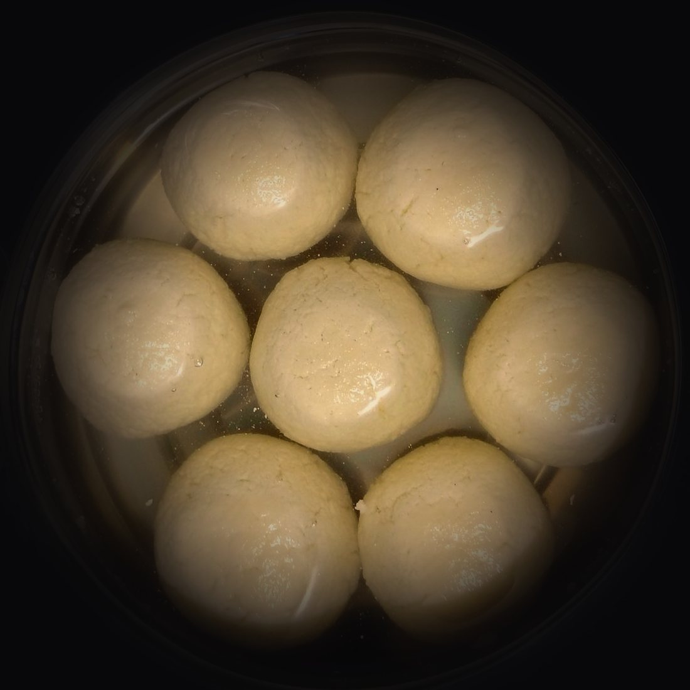
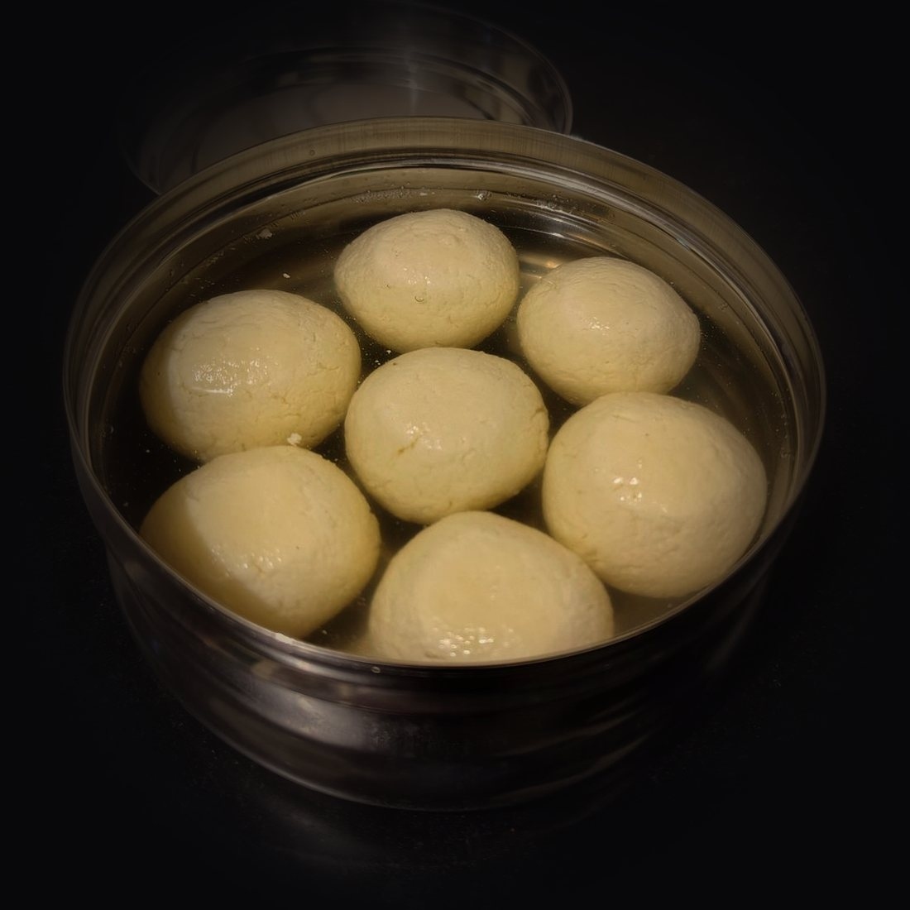

Sweet / Bengal
Rosogolla
রসগোল্লা
induction optimised
Spiceelaichi
Written28 August 2026
FromWhatsApp
Tagssweet · chhena · syrup · bengali · technique
1 spice on the shelf


Rosogolla ( Induction optimised)
Channa
- In a bowl mix 3tsp vinegar with 5tsp water
- In a pan, add 200 mL Amul taaza homogenized toned milk and 500 mL full cream milk (preferably from a plastic packet and should be non homogenized)
- Bring to a gentle boil at medium heat (600-900 induction) and turn off heat.
- Add the vinegar water mixture one spoon at a time with mixing in between till there is soft chhena in the milk
(NOTE- The whey should not turn too green or the chhena will become hard. The whey should be greenish and bit whitish. Also DO NOT ADD undiluted vinegar or the entire vinegar water mixture at once)
- Strain the chhena in a cheesecloth lined strainer and wash thoroughly with water to cool down and get rid of vinegar smell
- Take the end of cheesecloth together and make a potla and squeeze gently to remove whey from the chhena till the whey stream comes out one drop at a time
- Keep the potla with the chhena back on the strainer and put something a bit heavy on top to drain for ~25-30 min.
NOTE- Check the potla in between to see the status of moisture, the chhena should not be too dry
Forming Rasgullas
- Take the chhena in a dry plate and crumble it with hand
- use the heel of your palm to smoothen the chhena ensuring no lumps remain
- Sprinkle 1/4 tsp maida and again knead with heel of hand
NOTE- DO NOT KNEAD MORE THAN 7-8 MINUTES AS THIS WILL RELEASE THE FATS AND MAKE THE RASGULLAS FALL APART
- Bring the mixture together (it should stay cohesive but won't be tight like a dough)
- Form small balls from the dough by applying gentle pressure and ensuring there's no crack on the surface
Sugar syrup
Do this when the chhena is draining to match the timing as the formed rasgulla balls should not sit outside too long or they'll dry up and crack
- In a wide kadhai, add 1.5 katori sugar and 7 katori water. Add two elaichi
- Heat at medium heat (600 induction) till sugar is dissolved and then increase temperature to high (1200 induction) to bring to roaring boil
NOTE- Add 1/2-1 katori water in between if the syrup starts thickening as we need an almost watery boiling syrup and it should NOT BE thick)
Cooking rasgullas
- When the syrup is in roaring boil, add the formed balls gently in the middle of the kadhai one by one. They will migrate to the sides on their own
- Keeping the heat high (1200 induction), boil 3-4 min uncovered.
- Then cover with a lid (put a chakla on top for weight) and boil covered for 10-12 min (DO NOT OPEN IN BETWEEN)
- Uncover and boil for 5-10 more minutes depending on liking of softness.
- turn off heat, let it cool and serve
- STORAGE- after cooling,store in fridge in airtight container with ample sugar syrup covering the rasgullas
Sharing its spices